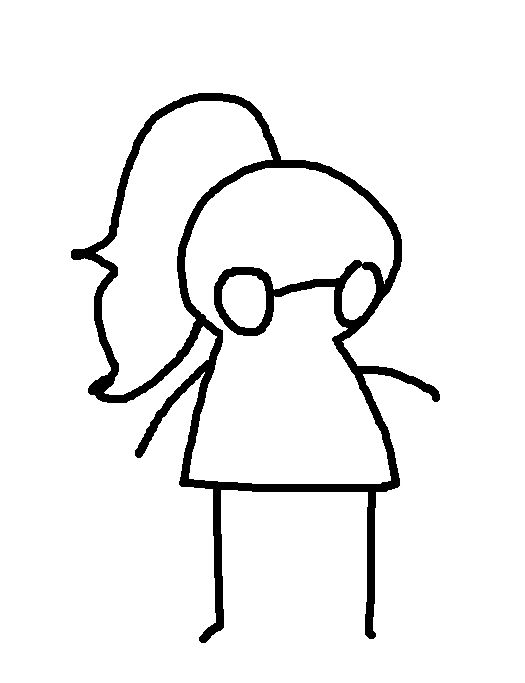
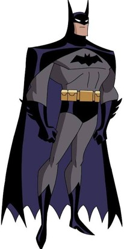
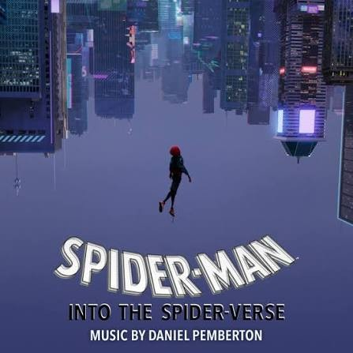

Evelin Familienaam
- Adres: Steenstraat 24
- Telefoon nummer: +32 000 00 00 07
- e-mailadres: evelin@emailadres.com

Hobby's
Interesses
- Favoriete band: Good Kid

- Favoriete personage: Batman

- Favoriete film: Spider-man: Into the Spiderverse
